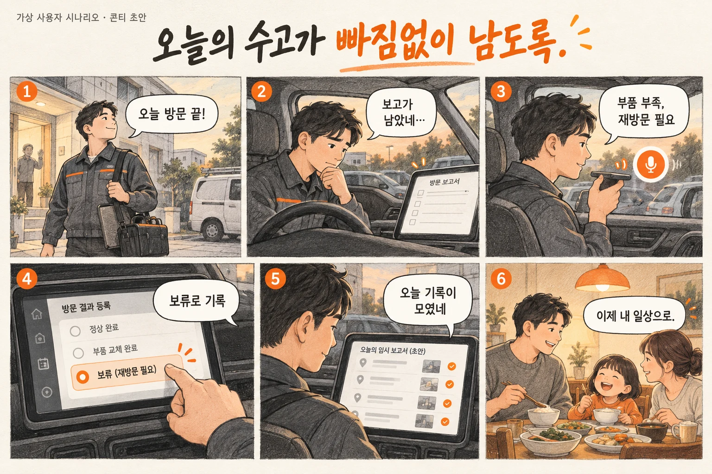

오늘의 수고가 빠짐없이 남도록.
다음 현장으로 가는 길과 오늘의 기록을 하나로 잇습니다.
방문 업무, 차에서 연결MVP 검증 후보사람의 하루에서 출발합니다.
설치·점검·수리 담당자
다음 현장으로 가는 길과 오늘의 기록을 하나로 잇습니다.
문제의 빈도와 강도는 사용자 인터뷰로 확인할 가설입니다.
여섯 장면으로 보는 경험.

- 마지막 방문을 마친다.
- 남아 있는 보고 때문에 마음이 무겁다.
- 정차 후 작업 메모를 남긴다.
- 완료·보류를 직접 확인한다.
- 하루 기록으로 만든 초안을 검토한다.
- 일을 마무리하고 일상으로 돌아간다.
기능을 넘어, 어떤 마음이 남을까.
끝나지 않은 하루
현장은 끝났는데, 보고는 아직 시작도 못 했다.
내 수고가 기록되는 안도
작업자가 확인한 기록을 모아 보고 초안으로. 하루의 끝을 돌려줍니다.
일하는 사람을 배려합니다. 감시 지표보다 기록의 누락과 중복 입력을 줄이는 데 집중합니다.
네 번의 연결, 하나의 흐름.
도착·문 열림을 작업 완료로 자동 판정하지 않습니다. 보고서는 사용자가 검토하는 초안입니다.
차량 화면에서는, 짧고 분명하게.
다음 방문 · 새봄상사
방문 결과 남기기
오늘의 보고 초안
비작동 화면 콘셉트입니다. 실제 구현은 CarUxRestrictions와 입력 제한을 따릅니다. 단순히 속도 0 또는 P단만으로 조작 가능 여부를 판단하지 않습니다.
SDK와 우리가 만들 기능을 나눕니다.
| SDK | 맡길 역할 | 검증·자체 개발 경계 |
|---|---|---|
| Navi | 선택한 다음 방문지 안내 | 방문 순서 최적화는 자체 로직 |
| Fused Location | 도착 후보 알림 | 도착은 작업 완료의 증거가 아님 |
| Vehicle · Odometer | 업무 이동 거리 보조 | 업무·개인 이동 구분 필요 |
| STT / TTS | 짧은 메모 / 다음 일정 읽기 | 텍스트 변환과 음성 출력; Gleo 제외 |
차량 상태 · 위치
내비 · 음성
사용자 확인 · 상태 관리
규칙 · 화면 · 로컬 저장
자체 HTTPS 서버
업무 시스템 연동
Gleo·UWB·VisionPulse는 MVP에서 제외합니다. 외부 인터넷은 공식 문서의 네트워크·외부 서버 전제를 근거로 검토하되, 실제 HTTPS 연결과 끊김 복구는 팀이 검증해야 합니다. 위치는 오래되거나 없을 수 있고, 차량 값은 capability 확인이 필요합니다.
가치가 반복되어야, 사업이 됩니다.
누가 비용을 낼까?
서비스 업체의 차량당 구독 가설. 중복 입력과 보고 부담의 감소를 실제 업무에서 검증합니다.
일하는 사람의 여유
일하는 사람을 배려합니다. 감시 지표보다 기록의 누락과 중복 입력을 줄이는 데 집중합니다.
현대자동차 브랜드 비전에 대한 팀의 해석입니다.
| 공식 1차 평가 항목 | 제안에서 보여줄 것 | 보완할 증거 |
|---|---|---|
| 차량특화성 | 다음 현장으로 가는 길과 오늘의 기록을 하나로 잇습니다. | 휴대폰만 사용할 때와 경험 비교 |
| 창의성 | 이동과 현장 기록의 연결 | 기존 서비스 대비 차별성 조사 |
| 기술 활용성 | 필요한 SDK를 하나의 완결된 흐름으로 연결 | 권한·값 변화·오류·재접속 시연 |
| 사업성 | 서비스 업체의 차량당 구독 가설. 중복 입력과 보고 부담의 감소를 실제 업무에서 검증합니다. | 휴대폰 업무 앱보다 나은 이유를 증명 |
공식 세부 배점은 공개되지 않은 것으로 검토했습니다. 임의 점수·예상 수상 확률을 부여하지 않습니다. 구독이나 브랜드 문구 자체가 가산점이라는 근거는 없습니다.
3명이 먼저 증명할 작은 완성.
첫 번째 검증 관문
휴대폰 업무 앱보다 나은 이유를 증명
차량·위치·내비 연동
작업 상태·보고 초안
정차 UI·현장 인터뷰
완료 기준: 정상 흐름 1회뿐 아니라 값 없음·권한 거절·연결 끊김에서도 잘못된 완료나 합의를 만들지 않을 것. 음성 접근이 막히면 정차 중 선택·입력으로 핵심 흐름을 검증합니다.
공식 근거와 검증 범위
- 공모전 심사·시상 안내 — 평가 항목과 공지 확인
- Pleos Playground · 프로젝트·SDK 신청 안내
- Vehicle SDK · NaviHelper SDK
- 플랫폼·네트워크 정책 · 앱 제출 가이드
- 현대자동차 브랜드 비전 — Progress for Humanity
공개 문서상 기능은 사용 권한·차종 지원·에뮬레이터 실행을 보장하지 않습니다. 평가표는 팀의 판단이며 공식 점수가 아닙니다.